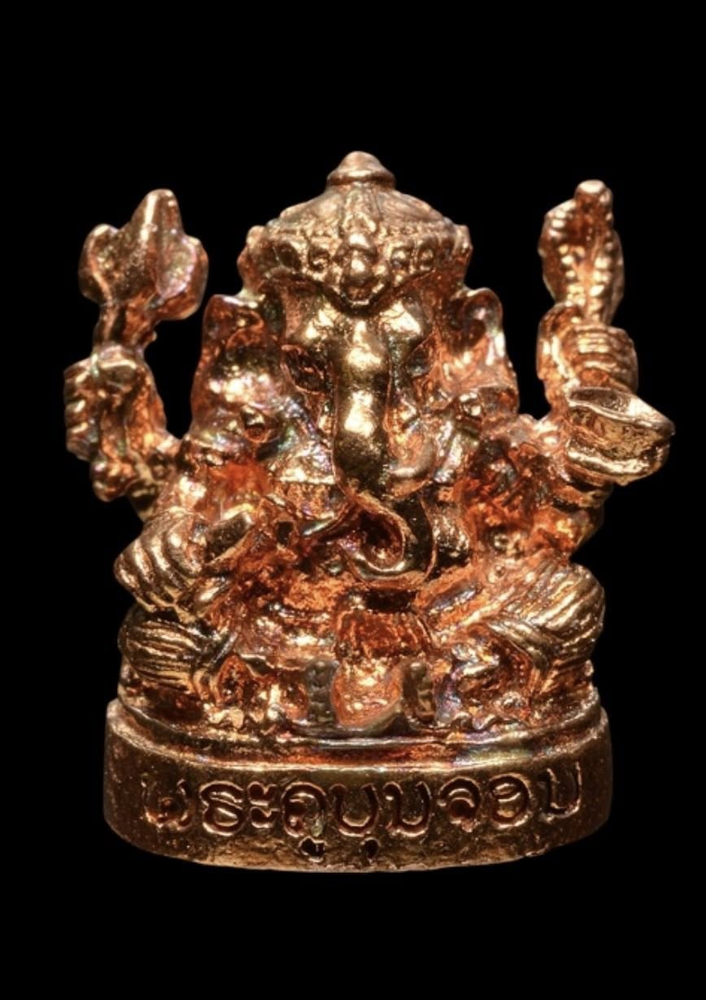

ມະຫາເທບແຫ່ງປັນຍາ, ສິລະປະວິທະຍາ ແລະ ຄວາມສຳເລັດ

ພະພິຄະເນດ ຫຼື ພະຄະເນດ ເປັນມະຫາເທບໃນສະໜາມເທບພະເຈົ້າຮິນດູ ທີ່ໄດ້ຮັບການເຄົາລົບນັບຖືຢ່າງກວ້າງຂວາງທີ່ສຸດ. ພະອົງເປັນໂອຣົດຂອງ ພະສິວະ (ພະອິດສວນ) ແລະ ພະແມ່ປາຣະວະຕີ (ພະແມ່ອຸມາເທວີ).
ມີລັກສະນະເດັ່ນຄື: ມີກາຍເປັນມະນຸດ ແຕ່ມີສຽນ (ຫົວ) ເປັນຊ້າງ, ມີງາຂ້າງດຽວ ແລະ ມີພາຫະນະປະຈຳກາຍຄື ໜູ (ມຸສິກະ). ພະອົງຊົງເປັນເທບແຫ່ງຄວາມຮອບຮູ້, ປັນຍາອັນສະຫຼາດສ່ອງໃສ ແລະ ເປັນຜູ້ຂະຈັດອຸປະສັກທັງປວງ.
ໃນການຈັດສ້າງວັດຖຸມຸງຄຸນພະພິຄະເນດລຸ້ນນີ້ ເພື່ອໃຫ້ລູກສິດລູກຫາໄດ້ບູຊາເປັນສິຣິມຸງຄຸນເປັນທີ່ຍອມຮັບຢ່າງກວ້າງຂວາງ ຄື:
ວັດດອນຂະເຫມົາໂພນຈຳປາສັກ: ພະອາຈານບຸນຈອນ ກິດຕິຍາໂນ ແມ່ນພະເກຈິອາຈານທີ່ມີຊື່ສຽງ ແລະ ເປັນທີ່ເຄົາລົບນັບຖືຂອງພຸດທະສາສະນິກະຊົນ. ທ່ານມີຊື່ສຽງໂດ່ງດັງໃນເລື່ອງການສ້າງ ວັດຖຸມົງຄຸນ ທີ່ມີຜູ້ຄົນນິຍົມສະສົມ ແລະ ບູຊາຢ່າງຫຼວງຫຼາຍ ທັງໃນ ສປປ ລາວ ແລະ ຕ່າງປະເທດ.
ວັດຖຸມຸງຄຸນພະພິຄະເນດທີ່ເພິ່ນປລຸກເສກ ຈະເດັ່ນໃນດ້ານເມດຕາມະຫານິຍົມ, ການຄ້າຂາຍຮຸ່ງເຮືອງ, ເສີມສະຕິປັນຍາ ແລະ ການປ້ອງກັນພະຍັນອັນຕະລາຍຕ່າງໆ ເຮັດໃຫ້ມີຜູ້ຄົນຫຼັ່ງໄຫຼໄປບູຊາຢ່າງບໍ່ຂາດສາຍ.
*ໝາຍເຫດ: ການບູຊາໃຫ້ໄດ້ຜົນດີທີ່ສຸດ ຕ້ອງຄວບຄູ່ໄປກັບການປະພຶດຕົນຢູ່ໃນສິນທຳ, ມີຄວາມກະຕັນຍູ ແລະ ຂະຫຍັນໝັ່ນເພຽນໃນການງານ.
ທ່ານສາມາດສວດບົດນີ້ກ່ອນເລີ່ມຕົ້ນເຮັດວຽກ, ຮຽນໜັງສື ຫຼື ເຮັດທຸລະກິດ ເພື່ອຂໍພອນ:
"ໂອມ ສຣີ ຄະເນສາຍະ ນະມະຮາ"
(ສວດ 3, 5, 9 ຫຼື 108 ຈົບ ຕາມຄວາມສະດວກ)